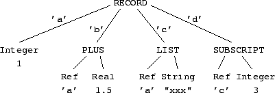
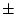

The ClassAd language has both an abstract syntax and several concrete syntaxes. The abstract syntax describes each expression as an abstract data structure called its internal form. Each concrete syntax maps an expression to a string of ASCII characters called its external form or representation. There are currently three concrete syntaxes defined: the native syntax, the old classad syntax, and the xml syntax. Each implementation should provide an application programming-language interface (API) for manipulating internal-form expressions as data structures in the host programming language and converting between representations: parsing to convert from external to internal form, and unparsing to convert from internal to external form.
Figure 1 shows a sample expression in abstract, native, and XML syntaxes.
|

(a) Abstract Syntax
[ a = 1; b = a + 1.5; c = { a, "xxx" }; d = c[3] ]
(b) Native Syntax
(c) XML Syntax
|
An internal-form expression is an ordered tree: Each node is either a leaf or an internal node with a sequence of child nodes. There is a unique root node; every other node has a unique parent. The leaves of an expression tree are literal constants and references. Each internal node contains an operator. Its children are called operands.
A literal constant is an integer, real, string, boolean, absolute time, relative time, error, or undefined. All literal constants have values as indicated in Table 1. The value of an error literal is the unique value error of type Error. An error literal also has an annotation, which is a sequence of zero or more non-null ASCII characters meant for human consumption. Similarly, an undefined literal has the value undefined and an annotation. Two literals are equivalent if and only if they have the same value.
|
A reference contains an attribute name, which is a sequence of zero or more non-null characters, or the reserved word parent. Two attribute names match if the character sequences are the same length and corresponding characters are the same except for differences in case. The following words are reserved, meaning that they may not be used as attribute names.
error false is isnt parent true undefined
Recognition of reserved words is independent of case. For example,
false, FALSE, and False are all reserved words.
An internal node consists of an operator and a sequence of child nodes called its operands. Each operator has an arity constraining the number of operands it may have. Operators are classified as unary (one operand), binary (two operands), ternary (three operands), or varargs (any number of operands). The operators and their arities are listed in the Table 2. Table 2 also indicates the symbol used to represent each operator in the native syntax described in the following section.
With the exception of the binary operator SELECT and the varags operators RECORD and FUNCTION_CALL, the operands may be arbitrary expressions.6 The second operand of the SELECT operator, called the selector, is an attribute name. The first operand of the FUNCTION_CALL operator, the function name, is a non-empty sequence of letters, digits, and underscores not starting with a digit; the remaining operands are called actual parameters. Section 4.3.9 lists a set of built-in functions that must be provided by all implementations.7The RECORD operator has zero or more operands, called attribute definitions. Each attribute definition is an ordered pair consisting of an attribute name and an arbitrary expression. The attribute names must be distinct (ignoring case)8We say that the attribute definition N = E defines the attribute name N' if N and N' match.
Each of the concrete syntaxes represents an attribute name or string literal as a sequence of printable ASCII characters (characters with values in the range 32 - 126 inclusive).9 The translation from concrete to abstract form (parsing) and from abstract to concrete form (unparsing) in each case shares the following two algorithms.
In the concrete representation, a backslash may be followed by one of the characters
b t n f r " ' \ 0 1 2 3 4 5 6 7
In the value of the resulting String or attribute name, the backslash and
one or more following characters are replaced by a single ASCII character as
indicated by Table 3.
If the character following the backslash is an octal digit, the octal constant consists of three digits if the first digit is 0, 1, 2, or 3 and two digits otherwise. However, the constant is terminated by the first character that is not an octal digit. The string is ill-formed if a backslash is followed by any character other than those listed in Table 3, or if the value of an octal constant following a backslash is zero.
Multiple canonical representations may parse to the sequence of characters, any
of which may be considered an ``unparsing'' of that sequence.
The canonical unparsing of a sequence of characters is defined relative
to an optional delimiter chararacter, which may be quote (34),
apostrophe (39), or neither.
Printable ASCII characters (in the range 32 - 126 inclusive) are represented
as themselves, with the exception that each backslash (92) or delimiter
character (if any) is preceded by an extra backslash.
Each character with the value 8, 9, 10, 12, or 13 is replaced by a backslash
followed by the character b, t, n, f, or r,
respectively.
Any other character is replaced by a backslash followed by a three-digit octal
representation of its value.
For example, the strings
a'\n
a\'\n
a\47\012
\141\047\012
all parse to the three-character sequence consisting of a lower-case a,
an apostrophe, and a newline (97, 39, 10 decimal). The canonical unparsing
is the second of these if apostrophe is the delimiter, and the first otherwise.
The native syntax of the ClassAd language is quite similar to C, C++, or Java. The external representation of an expression consists of a sequence of tokens separated by optional white space and/or comments. Comments are as in C++ or Java: The string // introduces a comment that continues until the end of the current line, and /* introduces a comment that continues until the next occurrence of */ (such comments do not nest).
{ }),
brackets ([ ]),
comma (,), and
semicolon (;).
The operators are shown in Table 2 in the previous section.
The syntax of literals and attribute names is shown in Table 4.
|
In Table 4, parentheses are used for grouping, literal
characters are enclosed in single quotes, and the postfix
meta-operators *, +, and ? are used to denote zero or more
repetitions, one or more repetitions, and zero or one repetitions, respectively.
The name other_character denotes any ASCII character other than
Quote (34)10apostrophe (39),
backslash (92),
linefeed (10),
carriage-return (13),
or null (0).
The name reserved_word denotes any of the strings
error false is isnt parent true undefined
in any combination of upper or lower case letters.
A ClassAd expression consists of a sequence of tokens, separated by whitespace. Whitespace consists of one or more occurrences of the ASCII characters Space (32), Horizontal Tab (9), Linefeed (10), Vertical Tab (11), Formfeed (12), or Carriage Return (13).11Whitespace is only required between two tokens if the first character of the second token could be construed as an extension of the first token according to the rules in Table 4. Two consecutive string_literals separated by whitespace are equivalent to a single literal whose value is the concatenation of the values of the two literals.
A string_literal or quoted_name is parsed according to the
common rules for Escaped Strings in Section 3.2.
The quoted_name syntax allows an attribute name to be any sequence of
non-null ASCII characters. If the sequence conforms to the syntax of
unquoted_name, the attribute name may be represented using either
syntax. For example, the following are three representations in the native
syntax of the same attribute name:
_abc '_abc' '_ab\143'
|
To simplify the grammar, productions enforcing the precedence of operators
have been omitted.
The actual precedences are indicated by the order in which operators are
listed.
Operators are listed in order of increasing precedence (most tightly binding
last), with operators on the
same line having equal precedence.
All binary operators are left-associative.
Unary operators have higher precedence than binary operators other than
subscripting and attribute selection.
The meta-syntactic symbols ()+? are used as in the definition in the
previous section.
A complete YACC grammar for the ClassAd language is contained in
Appendix A.
The canonical unparsing of an expression is completely parenthesized and has no
comments and no whitespace outside of string literals
or attribute names. For example, the strings ``-x + 3 * (y + 1)'' and
``((-x)+(3*(y+1)))'' both parse to the same internal form.
The second string is the canonical unparsing.
The canonical unparsing of an attribute name is simply the name itself if it conforms to the syntax of unquoted_name in Table 4. Otherwise, an attribute name is unparsed using the quoted_name syntax. A string literal is unparsed as a string. Inside a quoted_name or string, the unparsing uses the rules defined in Section 3.2, with apostrophe as the delimiter for a quoted_name and quote as the delimter for a string.
The literals true, false, undefined, and error unparse to true, false, undefined, and error, respectively. The annotation of an Error or Undefined literal is not included in the canonical unparsing.
The canonical unparsing of an integer literal is the decimal representation of its value, with no leading zeros unless the value is exactly zero and no sign unless the value is negative.
The canonical unparsing of a real literal is one of the strings
0.0, -0.0, real("INF"), real("-INF"), or
real("NaN"), or a normalized ``scientific'' representation such as
6.02E24 or 3.14159265E0, with one non-zero digit before the
decimal point and as many digits following the decimal point as necessary
to represent the value exactly (but at least one digit must follow the decimal
point).
For details, see Section 3.5 on the XML representation for
details.
The canonical unparsing of an absolute time literal has the form absTime("yyyy-mm-ddThh:mm:sszz:zz") where the argument is a string representation of the time and date in ISO 8601 syntax, including the local time zone as hours and minutes from the prime meridian (negative for west). The canonical unparsing of a relative time has the form relTime("d+hh:mm:ss.mmm") where the argument is a string representation of the duration in days, hours, minutes, seconds, and milliseconds.12The suffix .mmm is omitted if the number of milliseconds is zero, and leading fields are omitted, together with the following punctuation, if their values are zero. Leading digits of the first non-zero field are also omitted. The string begins with a minus sign if the value is negative. Examples are absTime("1949-03-11T08:17:00-06:00"), relTime("-5:00"), and relTime("0").
The canonical unparsing of a list or record expression omits the optional comma
or semicolon following the last item. In particular, the empty record
unparses as [] and the empty list unparses as {}.
The so-called ``old'' classad syntax is used in some versions of Condor to transmit classads (Record Expressions) over a network connection. It is deprecated. Not all expressions can be represented in the old syntax. To be so represented, an expression must satisfy the following conditions.13
If the root RECORD node has N children, the representation consists of 4
bytes representing the binary value N, most significant byte first, followed
by N strings of ASCII characters, each terminated by a null character. The
last two strings are representations, in the native syntax, of the expressions
in the attribute definitions corresponding to attribute names MyType
and TargetType, in that order. The remaining N-2 strings correspond
to the other N-2 operands of the RECORD operator. Each of these strings has
the form "name = expr", where name is the attribute name of
the definition, and expr is a representation, using the native syntax, of the
corresponding expression.
A Document Type Definition (DTD) for the XML representation may be found in Appendix B, and a schema definition compliant with the XML Schema standarad [5] is in Appendix C.
In the following paragraphs, xml_escape(string) denotes a string
of printing ASCII characters that results from the following two steps,
excuted in order. First, the string is replaced by its canonical
unparsing, as defined in Section 3.2. Then, each occurrence
of <, &, or > is replaced by <, &,
or >, respectively. The function xml_escape_attr is
defined similarly, except that in the second step, " is also
replaced by ".
The canonical XML representation of an expression depends on the operator at
the root of the expression. All ``simple'' (atomic) values conform to types
defined in XML Schema Part 2: Datatypes [3].
In this section, these types are referenced as if they were in the namespace
xsd, e.g., xsd:string, where
xmlns:xsd=http://www.w3.org/2001/XMLSchema.
A complete XML Schema is provided in Appendix C.
A string literal is represented as <s>xml_escape(s)</s>,
where s is the value of the literal.
The content of an <s> element has type xsd:string.
An integer literal is represented as <i>dddd</i>, where
dddd is the decimal representation of its value, with no excess leading
zeros (that is, the first digit is zero if and only if the value is zero),
preceded by a minus sign if the value is negative.
The content of an <i> element has type xsd:int.
A real literal is represented as <r>s</r>, where
s is the representation of the value of the literal in ``scientific''
notation, for example, <r>3.141592653589793E+00</r>.
More specifically
INF,
-INF,
and
NaN,
respectively.
d.f, where
d is a digit and f is a sequence of 15 digits,
E,
<i> element has type xsd:double.
Except for the representations for positive and negative infinity and
not-a-number, which conform to the specification of xsd:double,
this representation is meant to conform to the printf format
%1.15E.
A true or false boolean literal is represented by <b v="t"/>
or <b v="f"/>, respectively.
An Error literal with non-empty annotation a is represented by the string
<er a="annot"/>, where annot is
xml_escape_attr(a). If the annotation is empty, the representation is
<er/>.
An Undefined literal with non-empty annotation a is represented by the string
<un a="annot"/>, where annot is
xml_escape_attr(a). If the annotation is empty, the representation is
<un/>.
An absolute time literal is represented as
<at>yyyy-mm-ddThh:mm:sszz:zz</at>, where the element content is a
string representation of the time and date in a restricted ISO 8601 syntax,
including the local time zone as hours and minutes from the prime
meridian (negative for west).
The content of an <at> element has type xsd:dateTime.
An example is <at>2003-01-25T09:00:00-06:00</at>.
A relative time literal is represented as <rt>sPnDTnHnMn.mmmS</rt>,
where s is - for negative values and omitted for positive
values, each n is a non-negative integer, representing
days, hours, minutes, and seconds, mmm represents a number
of milliseconds, and the letters PDTHMS are included verbatim.
The suffixes represent scale factors: DT for days (24*60*60),
H for hours (60*60), M for minutes (60) and S for
seconds (1). A field (including its following scale factor)
may be omitted if its value is zero. If the value is an integral number of
seconds, the number of milliseconds, along with the preceding decimal point,
may be omitted, but if present, it must be represented as exactly three
digits. Finally, the letter T is omitted if the H, M,
and S fields are all omitted.
Note that these rules permit multiple representation of the same value.
For example,
<rt>PT1H2S</rt>,
<rt>PT60M2S</rt>, and
<rt>PT3602.000S</rt> represent the same value.
The canonical representation is defined by the limitation that the
number of hours is less than 24, and the numbers of minutes and seconds are
each less than 60. Moreover, each field (including milliseonds) is omitted if
its value is zero. However as a special case, the value zero is represented as
<rt>PT0S</rt>. Thus the first of the three examples above is the
canonical representation of a duration of 3602 seconds.
The content of an <rt> element has type xsd:duration.
If the root operator is LIST, the XML representation consists of the string
<l> followed by the concatenation of the representations of its
operands (in order), followed by the string </l>.
The content of an <l> element is a sequence of elements of any the
types listed in this section except <a>.
If the root operator is RECORD, the XML representation consists of the string
<c> followed by the concatenation of the representations of its
constituent definitions, followed by the string </c>.
The representation of an attribute definition name = expr consists of the
string <a n = "xml_escape_attr(name)"> followed by the
XML representation of expr followed by the string </a>.
The content of a <c> element is a sequence of <a> elements.
The content of an <a> element is an element of any of the types
listed in this section except <a>.
In all other cases, the XML representation of an expression consists
of <e>xml_escape(s)</e>,
where s is the canonical unparsing of the expression in the native syntax.
The content of an <e> element has type xsd:string.
Non-canonical XML representations may differ from the canonical representation in the following ways:
<s>
or <r> elements, provided the results are syntactically valid.
(For example, spaces may not be placed between the digits of an <i>
element.)
<r> element may use an unnormalized
representation (more or fewer digits before or after the decimal point),
the E and the following exponent may be omitted (implying an exponent
of zero), the decimal point may be omitted if the fractional part of the
mantissa is empty, and any combination of upper and lower case letters may
be used for the strings E, INF, and NaN.
<at> element may be any string which is a valid
argument to the absTime built-in function.
<rt> element may be any string which is a valid
argument to the relTime built-in function.
<e>xml_escape(s) </e>, where s is any string that
parses to e according to the native syntax.
<c><a n="the value"><e>b</e></a><a n="b"><r>3.14E0<\r></a><c>
<c>
<a n="the value"> <e> b</e> </a>
<a n="b"> <e>3.14</e> </a>
<c>
<e>[ 'the value' = b; b = 3.14 ]</e>
are three XML representations of the same expression; the first is the
canonical representation.